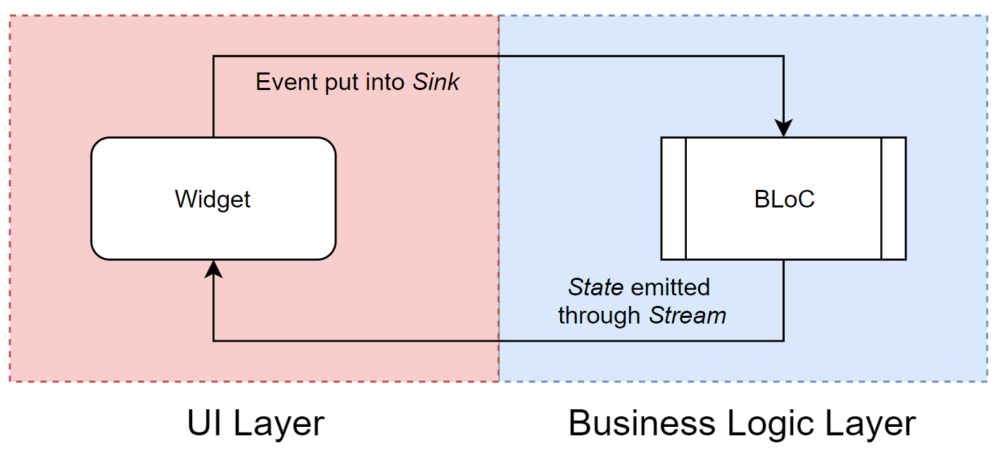

### Managing app state "Many of the classic problems of developing software products derive from this essential complexity and its nonlinear increases with size. From the complexity comes the difficulty of communication among team members, which leads to product flaws, cost overruns, schedule delays. From the complexity comes the difficulty of enumerating, much less understanding, all the possible states of the program, and from that comes the unreliability." - [Frederick P. Brooks](http://sunnyday.mit.edu/16.355/BrooksNoSilverBullet2.html) Jukka Nikki, Programmer & Mutable Object
### Mandatory joke
#### Design: [Simple](https://www.infoq.com/presentations/Simple-Made-Easy/) over [complex](https://www.infoworld.com/article/3639050/complexity-is-killing-software-developers.html) [.. value the items on the left more](https://agilemanifesto.org/) Manifesto for simple UI's - Components: [Composition](https://docs.flutter.dev/resources/inside-flutter#aggressive-composability) over Inheritance - Rendering: [Reactive](https://en.wikipedia.org/wiki/Reactive_programming)/[Declarative](https://docs.flutter.dev/get-started/flutter-for/declarative) over Imperative - Flow: One-Way/Events&Streams over Bidirectional - Actions: Async Events over Sync methods - State: Immutable over Mutable - Structure: Modular/Layered over Unstructured - Code: Generated over Handwritten
#### User interface is function of state [UI = f(state)](https://docs.flutter.dev/development/data-and-backend/state-mgmt/declarative) <img alt="flutter state mgmt" src="images/flutter-state-management.png" width="50%"> Developer provides a mapping from App state to UI components by implementing a Builder method. Builder method is called when the App state changes.
#### Flutter - [Hello World](https://docs.flutter.dev/get-started/flutter-for/react-native-devs) ``` import 'package:flutter/material.dart'; void main() { runApp( /// UI is built with Dart code const Center( child: Text( 'Hello, world!', textDirection: TextDirection.ltr, ), ), ); } ``` [runApp](https://api.flutter.dev/flutter/widgets/runApp.html) takes UI as parameter. The Center [widget](https://docs.flutter.dev/development/ui/widgets-intro) becomes the root of the widget tree and has one child, the [Text](https://docs.flutter.dev/development/ui/widgets/text) widget. UI is [composed](https://docs.flutter.dev/resources/architectural-overview#composition) using [simple widgets](https://docs.flutter.dev/resources/faq#can-i-extend-and-customize-the-bundled-widgets).
#### [Functional Reactive Programming (FRP)](https://quickbirdstudios.com/blog/what-is-functional-reactive-programming-frp/) <img alt="flutter state mgmt" src="images/functional-reactive-programming.png" width="70%"> - events and state changes are uni-directional flows. - business logic is executed as event is received. - business logic may emit state changes. - ui is rendered as reaction to received state change.
#### [Bloc = Business Logic Components](https://bloclibrary.dev/#/)  Each Bloc has one input (sink, add method) and output ([stream](https://dart.dev/tutorials/language/streams)). Bloc emits (output) states and handles (input) several types of events.
#### [Compare: React / Redux One-way data flow](https://redux.js.org/tutorials/essentials/part-1-overview-concepts) <img alt="flutter state mgmt" src="images/one-way-data-flow.png" width="40%"> - State is condition of the app at a point in time - View is rendered based on current state - View can initiate actions - Actions update state when needed - View re-renders based on the updated state
#### [Bloc library/pattern](https://bloclibrary.dev/#/architecture) <img alt="bloc architecture" src="images/bloc_architecture_full_white.png" width="60%"> Bloc attempts to make state changes predictable by regulating when a state change can occur and enforcing a single way to change state throughout an entire application.
### [Bloc rules, 1/3 (2018)](https://youtu.be/PLHln7wHgPE?t=1377) <img alt="bloc design guidelines" src="images/bloc_design_guidelines.png" width="60%"> bloc has simple api, injected dependencies, is platform independent, reactive programming recommended.
### [Bloc rules, 2/3 (2018)](https://youtu.be/PLHln7wHgPE?t=1377) <img alt="ui design guidelines" src="images/ui_design_guidelines.png" width="60%"> features map to bloc (1:1), input (event) and output (state) defined by bloc, states are unambiguous.
### [Bloc rules, 3/3 (2018)](https://youtu.be/PLHln7wHgPE?t=1377) <img alt="tldr design guidelines" src="images/tldr_design_guidelines.png" width="50%"> bloc = logic, ui = interaction. Simple & Separated. 1:1. No exceptions! ".. for the sanity of everyone."
### [Reactive Flutter Bloc, 1/1 (2018)](https://www.youtube.com/watch?v=RS36gBEp8OI) <img alt="reactive bloc principle" src="images/reactive_bloc_principle.png" width="70%"> It's all streams. Bloc is saved at widget tree. Any widget under bloc at widget tree can interact with bloc and send events. Builder methods build part of widget tree when new state is emitted.
#### [Example: Counter app](https://gist.github.com/felangel/fc8230776591f0297e6a1d1b5ef46a6c) "+" adds increment event to sink, counter is rendered when state is received from stream. [BlocProvider](https://pub.dev/documentation/flutter_bloc/latest/flutter_bloc/BlocProvider-class.html) controls bloc lifecycle, [BlocBuilder](https://pub.dev/documentation/flutter_bloc/latest/flutter_bloc/BlocBuilder-class.html) builds view.
#### [Example: CounterApp](https://gist.github.com/felangel/fc8230776591f0297e6a1d1b5ef46a6c) ``` class CounterApp extends StatelessWidget { @override Widget build(BuildContext context) { return MaterialApp( home: BlocProvider( /// DI: always same bloc instance create: (_) => CounterBloc(), child: CounterPage(), ), ); } } void main() => runApp(CounterApp()); // Creation of app ``` [BlocProvider](https://pub.dev/documentation/flutter_bloc/latest/flutter_bloc/BlocProvider-class.html) takes care of creating single instance of [Bloc](https://pub.dev/documentation/bloc/latest/bloc/Bloc-class.html), lazily by default. Usage of [BlocProvider](https://pub.dev/documentation/flutter_bloc/latest/flutter_bloc/BlocProvider-class.html) loosely relates to Dependency Injection as concept.
#### [Example: CounterPage](https://gist.github.com/felangel/fc8230776591f0297e6a1d1b5ef46a6c) ``` class CounterPage extends StatelessWidget { @override Widget build(BuildContext context) { return Scaffold( appBar: AppBar(title: const Text('Bloc Counter')), body: Center( child: BlocBuilder<CounterBloc, int>( builder: (context, count) { return Text('$count', style: Theme.of(context).textTheme.headline1); },), ), floatingActionButton: FloatingActionButton( child: const Icon(Icons.add), onPressed:()=>context.read<CounterBloc>().add(Increment()), ),);}} ``` [BlocBuilder](https://pub.dev/documentation/flutter_bloc/latest/flutter_bloc/BlocBuilder-class.html) builds UI. Context.read < CounterBloc > acquires bloc. [add](https://pub.dev/documentation/bloc/latest/bloc/Bloc/add.html) method sends events.
#### Example: Widget Test ``` void main() { testWidgets('Counter++ test', (WidgetTester tester) async { await tester.pumpWidget(CounterApp()); // build, trigger frame expect(find.text('0'), findsOneWidget); expect(find.text('1'), findsNothing); await tester.tap(find.byIcon(Icons.add)); // tap '+' await tester.pump(); // trigger a frame expect(find.text('0'), findsNothing); expect(find.text('1'), findsOneWidget); }); } ``` [widget testing](https://docs.flutter.dev/cookbook/testing/widget/introduction) allows initiating actions and testing ui components state changes frame by frame.
#### [Example: CounterBloc](https://gist.github.com/felangel/fc8230776591f0297e6a1d1b5ef46a6c) ``` /// Base event and Increment Event abstract class CounterEvent {} class Increment extends CounterEvent {} /// handles converting `CounterEvent`s into `int`s. class CounterBloc extends Bloc<CounterEvent, int> { /// The initial state of the `CounterBloc` is 0. CounterBloc() : super(0) { /// When `Increment` event is added, /// current `state` is accessed via the `state` property /// and a new state is emitted via `emit`. on<Increment>((event, emit) => emit(state + 1)); } } ``` Blocs super constructor sets initial state. [on < event > () registers event handler.](https://verygood.ventures/blog/how-to-use-bloc-with-streams-and-concurrency) "Increment" event handler is lambda, which emits new state.
#### [Example: CounterBlocTest](https://gist.github.com/felangel/fc8230776591f0297e6a1d1b5ef46a6c) ``` void main() { group('CounterBloc', () { test('initial state is 0', () { expect(CounterBloc().state, 0); }); blocTest<CounterBloc, int>( 'emits [1] when increment is called', build: CounterBloc.new, act: (bloc) => bloc.add(Increment()), expect: () => [1], ); }); } ``` [bloc_test](https://pub.dev/packages/bloc_test) allows testing reactive code in isolation. Mocking, setup, delays, etc. are supported.
### Why immutability? “Immutable objects are simple. They can only be in one state, which is carefully controlled by the constructor. One of the most difficult elements of program design is reasoning about the possible states of complex objects. Reasoning about the state of immutable objects, on the other hand, is trivial." ― Brian Goetz, Java Concurrency in Practice
### Immutable value types in dart Dart does not have value types, but you can write your own data classes. - define a constructor + the properties - override toString, operator ==, hashCode - implement a copyWith method to clone the object - implement handling of json de/serialization It's possible, but tedious and error prone.
### [Freezed: motivation](https://pub.dev/packages/freezed#motivation) <img alt="freezed motivation" src="images/freezed_motivation.png" width="80%"> Missing language level value types is a problem, but generating code from annotations is a powerful fix.
### [Example model: User](https://codewithandrea.com/articles/parse-json-dart-codegen-freezed/) ``` @freezed abstract class User with _$User { const factory User({ required String id, required String username, required String password, }) = _User; // json serialization factory User.fromJson(Map<String, dynamic> json) => _$UserFromJson(json); } ``` [@freezed](https://pub.dev/packages/freezed) annotation makes [Build runner](https://pub.dev/packages/build_runner) to generate _$User mixin, _User constructor and _$UserFromJson method for [json handling](https://pub.dev/packages/json_serializable). Generated code is saved to repository, as generation takes some time.
### [Example events: authentication](https://codewithandrea.com/articles/parse-json-dart-codegen-freezed/) ``` @freezed abstract class AuthenticationEvent with _$AuthenticationEvent { const factory AuthenticationEvent.login( String username, String password, ) = Login; const factory AuthenticationEvent.logout() = Logout; } ``` Login and Logout events are generated. Login has required parameters, which are passed to bloc. Bloc will have own handlers for both Login and Logout events.
### [Example state: authentication](https://codewithandrea.com/articles/parse-json-dart-codegen-freezed/) ``` @freezed abstract class AuthenticationState with _$AuthenticationState { const factory AuthenticationState.authenticated(User user) = Authenticated; const factory AuthenticationState.unauthenticated() = Unauthenticated; } ``` BlocListeners and BlocBuilders can react on different states that bloc emits. Authenticated state contains User instance, which UI can use to decide what user can do in app.
### [Structure: principles]() - Code is on monorepo - Monorepo may contain multiple apps - Each app uses set of features - Features are on their own modules - Modules export their public classes - Modules are kept in sync using task runner
### [Structure: monorepo](https://melos.invertase.dev/getting-started) ``` my_project ├── apps │ ├── apps_1 │ └── apps_2 ├── packages │ ├── package_1 │ └── package_2 ├── pubspec.yaml └── README.md ``` All code is on single repository. Apps are under */apps* directory App is composition of features. Each feature has own package under */packages*.
## Result: Safe programming Programs are safer if we prevent hardcoded dependencies, shared mutable state, side effects, nulls and mixed responsibilities and instead use dependency injection, immutable objects, pure functions, null safety and single responsibility principle.
#### [Flutter element & render trees](https://docs.flutter.dev/resources/inside-flutter) ["It would be a rare application that drew only a single widget. An important part of any UI framework is therefore the ability to efficiently lay out a hierarchy of widgets, determining the size and position of each element before they are rendered on the screen."](https://docs.flutter.dev/resources/architectural-overview#layout-and-rendering)
#### [Flutter has n State management options](https://docs.flutter.dev/development/data-and-backend/state-mgmt/intro) <img alt="state management" src="images/state-management-explainer.gif" width="80%"> Use [state management](https://docs.flutter.dev/development/data-and-backend/state-mgmt/intro) when you need to share application state between screens, across your app
#### [Compare: Reacts Redux store](https://www.freecodecamp.org/news/what-is-redux-store-actions-reducers-explained/) <img alt="state management" src="images/redux-store-usage-sharing-data.png" width="80%"> The state of the whole application is stored in the form of a JS object tree in a single [store](https://redux.js.org/api/store).
#### [Compare: React / Redux / Flux](https://redux.js.org/) <img alt="redux flux" src="images/redux-store-usage.png" width="50%"> Redux is a pattern and library for managing and updating application state, using events called "actions". Redux implements [Flux pattern](https://facebook.github.io/flux/docs/in-depth-overview/).
#### [MVVM anywhere?](https://en.wikipedia.org/wiki/Model%E2%80%93view%E2%80%93viewmodel) <img alt="bloc mvvm comparison" src="images/mvvm_bloc.png" width="60%"> in "[MVVM (Model-View-ViewModel) pattern .. BLoC is the replacement for ViewModel](https://medium.com/@aaron.chu/flutter-state-management-bloc-pattern-9cd6011c699)." - [VM](https://developer.android.com/topic/libraries/architecture/viewmodel)(BLoC) is responsible for managing the state - [VM](https://developer.android.com/topic/libraries/architecture/viewmodel)(BLoC) uses Model (Repository) to access data Communication between V(UI) and [VM](https://developer.android.com/topic/libraries/architecture/viewmodel)(BLoC) has changed. [Stream](https://dart.dev/tutorials/language/streams) has replaced data binding.
#### [Example: Value of App Architecture](https://www.youtube.com/watch?v=JVRPIittNaE) <img alt="app architecture" src="images/cost_of_app_architecture.png" width="80%"> Every system has architecture, planned or accidental, planned being mostly preferable. Pros & Cons depend on stakeholder, personal preferences, project & phase.
## Flutter Recap - [React](https://reactjs.org/)/[ReactNative](https://reactnative.dev/) have similarities to Flutter - Flutter UI is [reactive](https://docs.flutter.dev/resources/inside-flutter) and [declarative](https://docs.flutter.dev/get-started/flutter-for/declarative) - [UI's are composed](https://docs.flutter.dev/development/ui/layout) - [widgets](https://docs.flutter.dev/development/ui/widgets-intro) everywhere! - Dart is [typed](https://dart.dev/guides/language/type-system), [null safe](https://dart.dev/null-safety), [top 20](https://redmonk.com/sogrady/2022/10/20/language-rankings-6-22/) language - Dart enables [hot reload](https://docs.flutter.dev/development/tools/hot-reload), [JIT](https://dart.dev/tools/dart-compile) and [AOT](https://dart.dev/tools/dart-compile) - Usage of [native / foreign code](https://docs.flutter.dev/development/platform-integration/platform-channels) is supported - Architecture != State Management, you need both - [Bloc](https://bloclibrary.dev/#/) is popular [state management option](https://docs.flutter.dev/development/data-and-backend/state-mgmt/options) - Bloc works as [VM](https://developer.android.com/topic/libraries/architecture/viewmodel) at [Model-View-ViewModel](https://en.wikipedia.org/wiki/Model%E2%80%93view%E2%80%93viewmodel) - Starting with [Spike](https://wiki.c2.com/?SpikeSolution) / [PoC](https://en.wikipedia.org/wiki/Proof_of_concept) is good decision
# Simple over Complex Flutter example Counter app implemented using Bloc
#### Compare: Redux [Counter reducer](https://redux.js.org/tutorials/fundamentals/part-1-overview) ``` function counterReducer(state = initialState, action) { // Reducers usually look at the type of action that happened // to decide how to update the state switch (action.type) { case 'counter/incremented': return { ...state, value: state.value + 1 } // new copy default: // If the reducer doesn't care about this action type, // return the existing state unchanged return state } } ``` The store will run its reducer function and save the new state value. Reducers are [pure functions](https://www.geeksforgeeks.org/pure-functions-in-javascript/) that take the previous state and an action, and return the next state.
#### Compare: [Redux one-way dataflow](https://redux.js.org/tutorials/essentials/part-1-overview-concepts) <img alt="redux flow" src="images/redux-dataflow-diagram.gif" width="60%"> The only way to update the state is to call store.dispatch() and pass in an action object.
#### [Volatility-based decomposition](https://www.informit.com/articles/article.aspx?p=2995357&seqNum=2) identify and encapsulates areas of potential change. implement behavior as interaction between encapsulated areas. at app we can use features as one organizing principle - but how to identify and name them? - and should they be coarse or fine granular? goal => high [cohesion](https://en.wikipedia.org/wiki/Cohesion_(computer_science)), low [coupling](https://en.wikipedia.org/wiki/Coupling_(computer_programming)#Semantic_coupling), ..
[layers](https://github.com/devonfw-forge/devon4flutter-non-bloc-arch/wiki/220-BLoC)
<img alt="multimodule monorepo arch" src="images/multimodule_repo_example.png" width="80%"> [layers and packages](https://github.com/devonfw-forge/devon4flutter-non-bloc-arch/wiki/220-BLoC)
<img alt="lib and packages" src="images/app_lib_packages_structure.png" width="30%"> lib:features, packages:domain/repository, data/client
#### [summary of organizing principles](https://verygood.ventures/blog/very-good-flutter-architecture) lib contains presentation - features match to functional requirements - found from software design and named clearly packages contains domain and data - domain layer consists of repositories - repositories transform raw data to apps domain - data layer consists of clients - clients are built to be reusable
#### Design: [Simple](https://www.infoq.com/presentations/Simple-Made-Easy/) over [complex](https://www.infoworld.com/article/3639050/complexity-is-killing-software-developers.html) [.. value the items on the left more](https://agilemanifesto.org/) - Types: Static/Safe over Dynamic/Nullable - State: Immutable over Mutable - Flow: One-Way/Events&Streams over bidirectional - Presentation: Code over Templates - Rendering: Reactive/[Declarative](https://docs.flutter.dev/get-started/flutter-for/declarative) over Imperative - Components: Composition over Inheritance - Libraries: Focused/Small over Multipurpose - Structure: Modular/Layered over Unstructured - Programming: Generation over Coding
#### Simple over Complex Recap - harden code using strong typing - shorten feedback loops using small tests - use one-way flows to help reason code - only support immutable data at ui - don't use templates, use code - render changes same way as initial values - use simple components - write code only when absolutely necessary - organize code to minimize ripple effect - use uniform programming model in whole app
#### History / Presentations - [React: rethinking best practices, 10/2013](https://www.youtube.com/watch?v=x7cQ3mrcKaYx) - [Flux: Rethinking Web App Development, 5/2014](https://www.youtube.com/watch?v=nYkdrAPrdcw&list=PLb0IAmt7-GS188xDYE-u1ShQmFFGbrk0v) - [Open the Sky, 23.10.2014](https://github.com/flutter/flutter/commit/00882d626a478a3ce391b736234a768b762c853a) - [Sky Demo, 4/2015](https://www.youtube.com/watch?v=PnIWl33YMwA) - [The Mahogany Staircase - (..) Layered Design, 3/2016](https://www.youtube.com/watch?v=dkyY9WCGMi0) - [Flutter's Rendering Pipeline, 5/2016](https://www.youtube.com/watch?v=UUfXWzp0-DU) - [Flutter: Dart Developer Summit 2016, 10/2016](https://www.youtube.com/watch?v=Mx-AllVZ1VY) - [Flutter: (..) UI framework for tomorrow (..), 9/2017](https://www.youtube.com/watch?v=VUiVkDpikDI) - [Flutter: The Best Way to Build for Mobile?, 10/2017](https://www.youtube.com/watch?v=1BXg4wfB9pA) - [Early Success Story, 2018](https://medium.com/kinandcartacreated/flutter-the-skys-the-limit-84887c8f650d)
## More - [State of Flutter & Dart](https://redmonk.com/jgovernor/2022/05/16/flutter-propels-dart-frameworks-language-adoption-and-cross-platform-development/) - [Flutter & Ubuntu](https://ubuntu.com/blog/flutter-and-ubuntu-so-far) - [Awesome Flutter](https://github.com/Solido/awesome-flutter) - [Riverpod and Bloc comparison](https://otakoyi.software/blog/riverpod-and-bloc-packages-comparison) - [Crossing the chasm](https://www.hightechstrategies.com/crossing-the-chasm-summary/)
## Examples - [wisgen, 2019, no null safety used](https://github.com/Fasust/wisgen) - [i/o Pinball, 2022](https://verygood.ventures/success-stories/i-o-pinball) - [ranch game, 2022](https://verygood.ventures/blog/very-good-ranch-game)
#### ["Architecture is about the important stuff. Whatever that is." - Ralph Johnson](https://martinfowler.com/architecture/) - Within the Flutter community, [State Management](https://docs.flutter.dev/development/data-and-backend/state-mgmt/intro) and [Architecture](https://martinfowler.com/architecture/) are often used synonymously - [Any architecture for a Flutter application](https://github.com/devonfw-forge/devon4flutter-non-bloc-arch/wiki/200-Architecting-a-Flutter-App#state-management-vs-architecture) will have [some sort of State Management](https://docs.flutter.dev/development/data-and-backend/state-mgmt/options) - [State Management](https://docs.flutter.dev/development/data-and-backend/state-mgmt/intro) is not an [architecture by itself](https://bloclibrary.dev/#/architecture), even if [bloc library](https://bloclibrary.dev/) documentation contains [architecture proposition]((https://bloclibrary.dev/#/architecture)). - Compare: [Redux](https://redux.js.org/), Reacts state management solution
#### [Sources: by layer/type+domain](https://github.com/devonfw-forge/devon4flutter-non-bloc-arch/wiki/400-Conventions) ``` lib | ├── blocs ├── data ├── models ├── repositories ├── ui | ├── pages | | ├── home_page.dart | | └── ... | └── widgets | ├── image_card.dart | └── ... └── main.dart ``` Stick to one way of organizing files: [by feature/type](https://medium.com/flutter-community/scalable-folder-structure-for-flutter-applications-183746bdc320) is viable option if features can be clearly defined